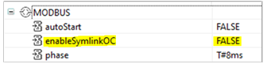

You can configure your application so that symlinks are not remapped when performing an online change. In an application with 1000 HW CATs, for example, remapping symlinks can generate a burst of approximately 4000 events. Depending on the platform, this example of symlink remapping during online change can take up to 50ms.
In some cases, remapping symlinks during online change can cause I/O to enter their fallback state.
In the EcoStruxure Automation Expert Hardware Configuration editor, navigate to a Resource and expand the bus master node.
Set the enableSymlinkOC property to FALSE:
